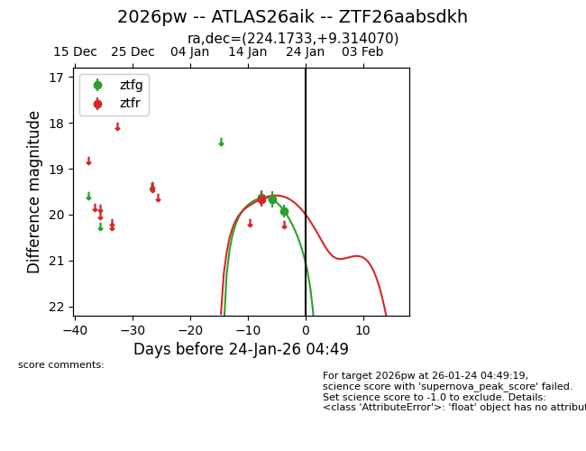
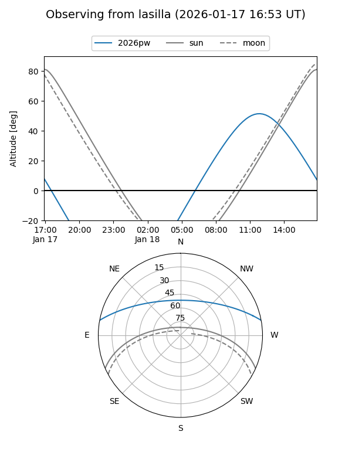
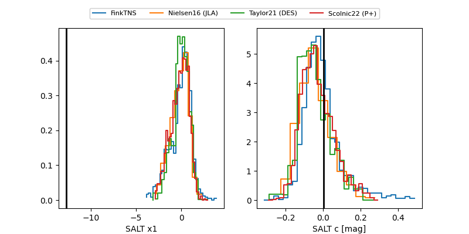

2026pw
Target 2026pw at 2026-01-23 21:11
Aliases and brokers:
FINK: link
Lasair: link
ALeRCE: link
TNS: link
YSE: link
alt names
ZTF26aabsdkh (ztf,fink_ztf)
2026pw (tns,yse)
ATLAS26aik (atlas)
Coordinates:
equatorial (ra, dec) = 224.1733,+9.31407
equatorial (HMS+DMS) = 14:56:41.60,+09:18:50.65
galactic (l, b) = (7.8193,+55.49950)
Flags:
Photometry:
last ztfg=19.92, ztfr=19.66
3 ztfg, 1 ztfr detections
Lightcurve

Visibility


Additional plots
